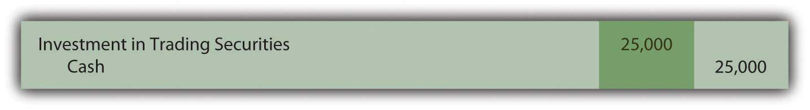
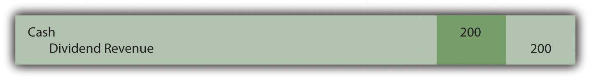
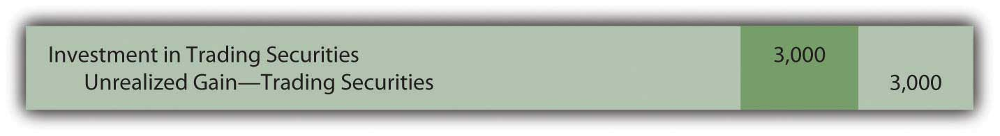
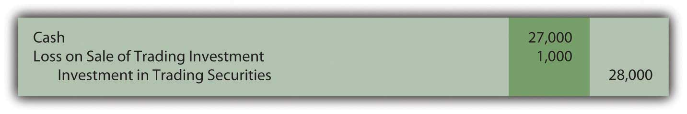

At the end of this section, students should be able to meet the following objectives:
Question: Businesses frequently acquire ownership (equity) shares of other companies. On June 30, 2009, Microsoft disclosed that it held investments in the stock of other companies with a value of over $4.4 billion. During 2008, Mars Inc. offered to buy all the ownership shares of Wm. Wrigley Jr. Company for approximately $23 billion. The acquisition of Merrill Lynch by Bank of America made headlines around the world in the fall of 2008. The purchase of such shares offers many potential benefits. What are the most common reasons for one company to buy the ownership shares of another company?
Answer: Potentially, many benefits can accrue from obtaining shares of the stock issued by a business. The method of financial reporting applied by the owner depends on the purpose for holding such investments. Thus, the accounting process here is unique. The reporting of most assets does not vary significantly because of the rationale for making the purchase and retaining the property. In contrast, information about the ownership of the stock of another company is presented according to one of several methods based solely on the reason for the investment.
Companies frequently find that they are holding excess cash not needed at the moment for operating purposes. Traditional savings accounts or money market funds offer very low returns for this money. Company officials often seek a greater profit by using surplus cash to buy the ownership shares of other organizations. The hope is that the market price of these shares will appreciate in value and/or dividends will be received before the money is needed for operations. Such investments can be held for a few days (or even hours) or many years. Although earnings can improve through this strategy, the buyer does face additional risk. Share prices do not always go up; they can also decline resulting in losses for the investor.
When equity shares are bought solely as a way to store cash in a possibly lucrative spot, the investor has no interest in influencing or controlling the decisions of the other company. That is not the reason for the purchase; the ownership interest is much too small.
Investors, though, may also embrace a strategy of acquiring enough shares to gain some degree of influence over the other organization. Often, profitable synergies can be developed by having two companies connected in this way. For example, at the end of 2008, The Coca-Cola Company (CCC) held approximately 35 percent of the outstanding stock of Coca-Cola Enterprises (CCE), its primary bottler and distributor. CCC does not own sufficient shares to controlIndicates that consolidated financial statements should be reported by bringing together the financial information of two companies; according to U.S. GAAP, it exists when one company owns more than 50 percent of the outstanding common shares of another company. the operations of CCE but it certainly can apply significant influence if it so chooses.
Finally, as in the bid by Mars to acquire Wrigley, the investor may seek to obtain a controlling interest in the other company. In many cases, one company even acquires 100 percent ownership of the other. Such acquisitions are actually common as large companies attempt to move into new industries or geographical areas, become bigger players in their current markets, gain access to valuable assets, or simply eliminate competitors. Many smaller companies are started by entrepreneurs with the specific hope that success will eventually attract acquisition interest from a larger organization. Often, a significant profit can be earned by the original owners as a result of the sale of their company.
Question: There are clearly different reasons for buying stock. Assume that Valente Corporation is holding $25,000 in cash that it will not need for several weeks. The money is currently in a money market fund earning only a 1 percent annual rate of return. In hopes of generating a higher profit, the president of Valente has studied the financial statements of Bayless Corporation, a company with capital stock trading on the New York Stock Exchange (NYSE) for $25 per share. On November 30, Year One, the president believes that Bayless stock is primed to have a rather significant jump in market price in the near future. Consequently, Valente uses the $25,000 to acquire one thousand shares of stock in Bayless that will be held for only a few weeks or months. How does an owner report an equity investment that is bought with the expectation that the shares will be sold shortly after the purchase is made?
Answer: If management’s intentions are to buy and sell the equity shares of another company in the near term, the purchase is classified on the balance sheet as an investment in trading securitiesClassification of investments in stocks and bonds when management’s intentions are to buy and sell them quickly in the near term; they are reported on the balance sheet at fair value with all changes in value affecting net income.. On the acquisition date, the asset is recorded by Valente at historical cost.
Figure 12.1 Purchase of Ownership Shares Classified as Trading Securities
As an owner, even for a short period of time, Valente might well receive a cash dividend from Bayless. Many companies distribute dividends to their stockholders periodically as a way of sharing a portion of any income that has been earned.
Assume that Bayless has been profitable and, as a result, a $0.20 per share cash dividend is declared by its board of directors and paid in December. Valente receives $200 of this dividend ($0.20 per share × one thousand shares) which is reported as revenue on the company’s income statement for this period.
Figure 12.2 Receipt of Dividend from Investment in Stock
Because of the short-term nature of this investment, Valente might sell these shares prior to the end of the year. The purchase was made anticipating a quick sale. A gain is reported if more than $25,000 is received while a loss results if the shares are sold for less than $25,000. As with dividend revenue, such gains and losses appear on the owner’s income statement.
Accounting becomes more complicated if Valente continues to hold this investment at year end. Should equity shares held as a trading security be reported in the owner’s financial statements at historical cost or current fair value? Which reporting is most helpful to outside decision makers?
U.S. GAAP requires investments in trading securities to be reported on the balance sheet at fair value. Therefore, if the shares of Bayless are worth $28,000 at December 31, Year One, Valente must adjust the reported value from $25,000 to $28,000 by reporting a gain.
Figure 12.3 Shares of Bayless (a Trading Security) Adjusted to Fair Value at End of Year
The gain here is labeled as “unrealizedA gain or loss created by an increase or decrease in the value of an asset although not yet finalized by a sale.” to indicate that the value of the asset has appreciated but no final sale has yet taken place. The gain is not guaranteed; the value might go back down before the shares are sold. However, the unrealized gain is recognized and reported on the owner’s Year One income statement.
Link to multiple-choice question for practice purposes: http://www.quia.com/quiz/2092911.html
Question: The reporting demonstrated above for an investment in a trading security raises a question that has long been debated in financial accounting. Is recognizing a gain (or loss if the value had declined prior to the end of the year) on the owner’s income statement appropriate if no actual sale has yet occurred? There is an important related question. In previous chapters, assets such as buildings, copyrights, and inventory were never adjusted to fair value unless an impairment had taken place. Why is an investment in a trading security recorded at fair value regardless of whether that value is above or below historical cost?
Answer: According to U.S. GAAP, changes in the value of trading securities are reported and the resulting gains or losses are shown within current net income for several reasons:
At year-end, this investment (as a trading security) will be reported on the investor’s balance sheet at its fair value of $28,000. On the income statement, both the dividend revenue of $200 and the unrealized gain of $3,000 are shown as increases in net income.
If, instead, the fair value at year-end had been only $21,000, a $4,000 unrealized loss will appear on Valente’s income statement to reflect the decline in value ($25,000 historical cost dropping to $21,000 fair value).
Link to multiple-choice question for practice purposes: http://www.quia.com/quiz/2092969.html
Question: In this ongoing illustration, Valente Corporation had bought one thousand shares of Bayless Corporation which it planned to sell in a relatively short period of time. On the last day of Year One, this trading security was adjusted from the historical cost of $25,000 to the fair value of $28,000. The $3,000 unrealized gain was reported within net income on the Year One income statement.
Assume that these shares are subsequently sold by Valente on February 3, Year Two, for $27,000. What reporting is appropriate when an investment in trading securities is sold in a subsequent period? What effect does this final transaction have on reported income?
Answer: Following the Year One adjustment, this investment is recorded in the general ledger at fair value of $28,000 rather than historical cost. Subsequently, when sold, any difference between the sales price and this carrying amount is recorded as a gain or a loss on the Year Two income statement.
Because the sales price of these shares ($27,000) is less than the reported balance ($28,000), recognition of a $1,000 loss is appropriate. This loss reflects the drop in value that took place during Year Two.
Figure 12.4 Sale of Shares of Bayless (a Trading Security) for $27,000 in Year Two
This investment was originally bought for $25,000 and eventually sold for $27,000 so an overall gain of $2,000 was earned. For reporting purposes, the income effect is spread between the two years of ownership. A gain of $3,000 was recognized in Year One to reflect the appreciation in value during that period. A loss of $1,000 is reported in Year Two because the stock price fell by $1,000 in that period prior to being sold.
Investments in trading securities are always shown on the owner’s balance sheet at fair value. Gains and losses reported in the income statement parallel the movement in value that took place each period.
Link to multiple-choice question for practice purposes: http://www.quia.com/quiz/2092949.html
Many companies acquire equity shares of other companies. The applicable accounting procedures depend on the purpose for the ownership. If the investment is only to be held for a short period of time, it is labeled a trading security and adjusted to fair value whenever financial statements are to be produced. Any change in value creates a gain or loss that is reported within net income because fair value is objectively determined, the shares can be liquidated easily, and a quick sale is anticipated before a large change in fair value is likely to occur. Dividends received by the owner are recorded as revenue. Whenever trading securities are sold, only the increase or decrease in value during the current year is reported within net income since earlier changes have already been reported in that manner.